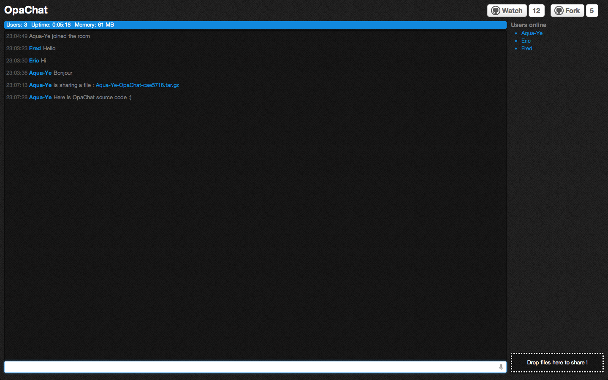
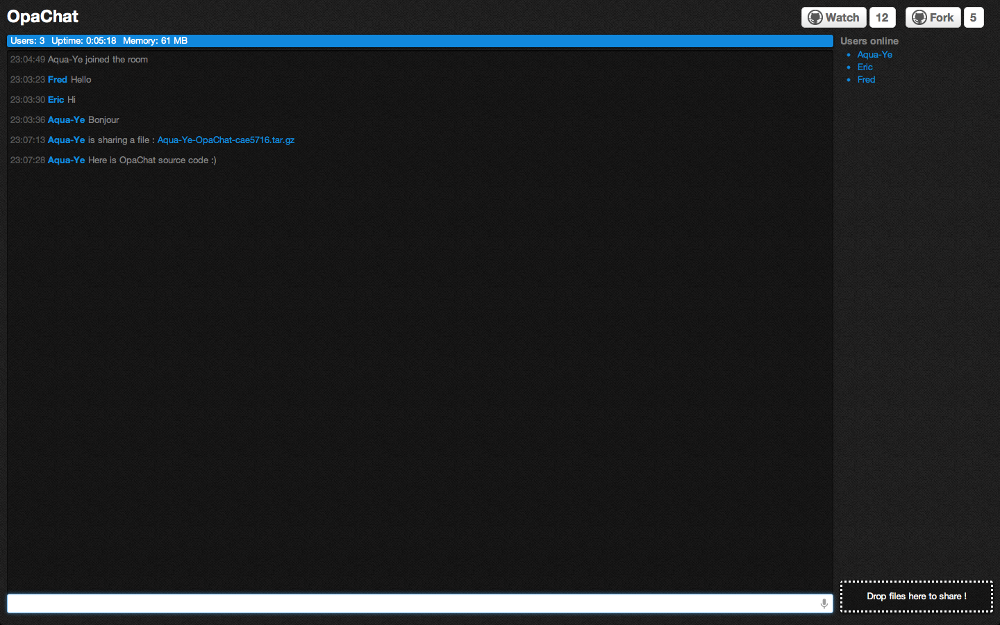

What is OpaChat ?
OpaChat is a simple, one-room, scalable real-time web chat, with file sharing - built in Opa.
What does it look like ?

It looks like this :)
OpaChat is a simple, one-room, scalable real-time web chat, with file sharing - built in Opa.

It looks like this :)